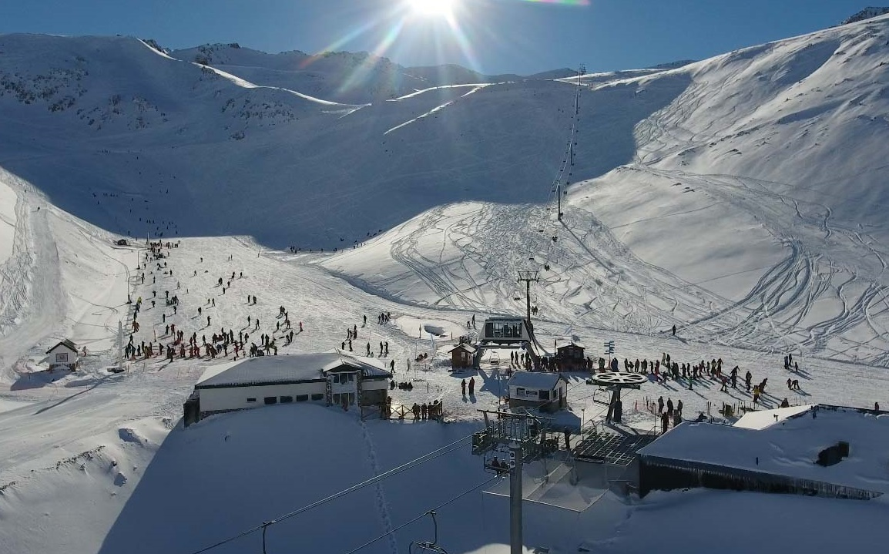

La Hoya

La hoya es uno de los centros de esquí con más historia de la Argentina.
Inaugurado en 1974, el centro de Actividades de Montaña La Hoya se ubica a solo 12 kilometros de la ciudad de Esquel, en el Oeste de Chubut. Con un diseño natural que protege las pistas del sol, la variedad de pendientes y su excelente nieve en polvo permiten disfrutar del esquí y el snowboard, es un cerro capaz de sorpender a quienes lo visitan por primera vez.
Localizacion geografica
Caracteristicas del centro de esqui
- Un cerro para aprender a esquiar: Es ideal para aprender a esquiar porque su pista de principiantes es ampli, segura y está rodeada de servicios para el esquiador.
- Adrelina a un paso de las pistas: Excelente calidad de nieve, un alto nivel de infrestructura, tentadores fuera de pistas, la accesibilidad desde la ciudad y el mejor ambiente familiar convierten a La Hoya en un cerro perfecto para todos los públicos.
- Un espacio seguro para las familias: Su mismo relieve hace que todas las pistas confluyan, directa o indirectamente, en una misma área, la cota de 1650 metros sobre el nivel del mar,brindando un marco de seguridad para las familias que pueden disfrutar del cerro con la mayor tranquilidad.
- Una montaña a tu medida: Los deportistas más avanzados se sentirán a gusto por la cercanía de cañadones ideales para el fuera de pista y por la sobresaliente calidad de nieve, que por orientación especial de la montaña se mantiene más seca durante más tiempo.
Los pases para poder ingresar a este magnifico centro de esquí se pueden adquirir en la Oficina del CAM LA hoya en Rivadavia 1388 de la ciudad de Esquel, en la base del Cerro y en agencias de viajes de la ciudad